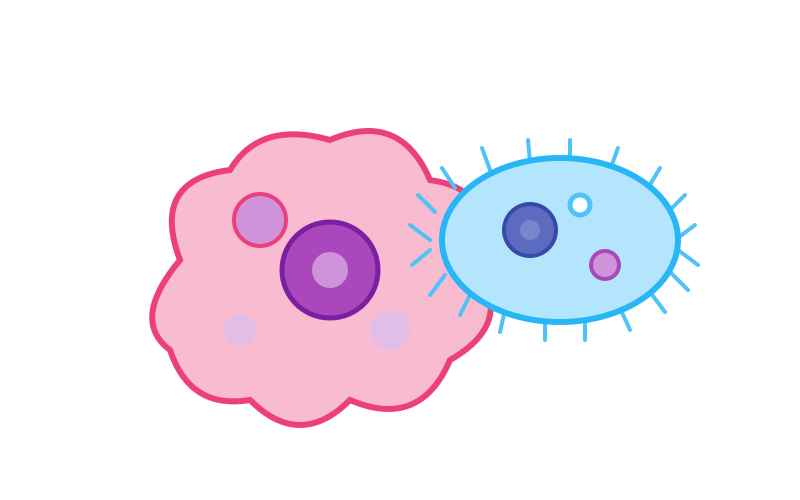

📖 Os Primeiros Eucariontes
O Reino Protista reúne organismos eucariontes (células com núcleo definido) e, na maioria, unicelulares. São divididos em dois grandes grupos de interesse do ENEM: os protozoários (heterótrofos) e as algas (autótrofos fotossintetizantes).
🦠 Protozoários: Classificação pela Locomoção
Os protozoários são classificados pelo tipo de locomoção — e o tipo de locomoção também indica a doença que causam. Assim, é só decorar: locomoção → doença → agente.
| Grupo | Locomoção | Doença | Agente |
|---|---|---|---|
| Rizópodes | Pseudópodes | Amebíase | Entamoeba histolytica |
| Flagelados | Flagelos | Doença de Chagas | Trypanosoma cruzi |
| Flagelados | Flagelos | Leishmaniose | Leishmania |
| Ciliados | Cílios | Raramente patogênicos | Paramecium |
| Esporozoários | Sem locomoção própria | Malária | Plasmodium |

🦟 Vetores: Como as Doenças Chegam Até Nós
A maioria das protozooses precisa de um vetor para chegar ao ser humano. Identificar o vetor é a chave para responder as questões do ENEM.
- Barbeiro (triatomíneo) → Trypanosoma cruzi → Doença de Chagas.
- Anopheles (mosquito) → Plasmodium → Malária.
- Mosquito palha (flebotomíneo) → Leishmania → Leishmaniose.
- Água/alimentos contaminados → Entamoeba → Amebíase.
🌿 Algas: O Pulmão dos Oceanos
As algas são protistas autotróficos: fazem fotossíntese e produzem cerca de 70% do oxigênio do planeta. Podem ser unicelulares (como a diatomácea e a Euglena) ou pluricelulares (como a alga verde e a alga vermelha).
Além do oxigênio, produzem a base das cadeias alimentares aquáticas e são fonte de agar (meio de cultura), alginato e fertilizantes.